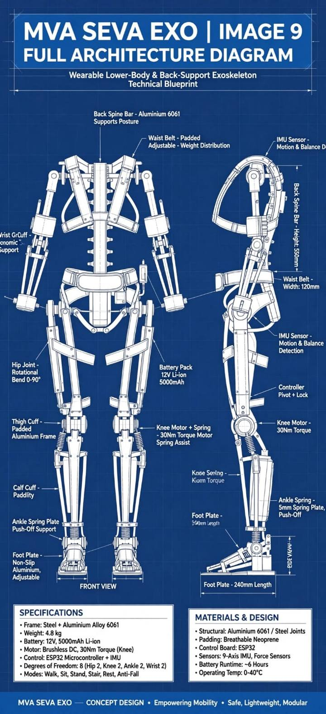
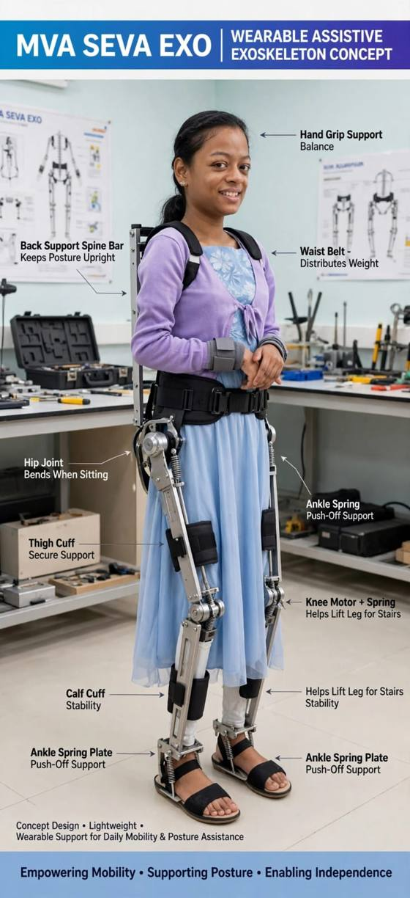
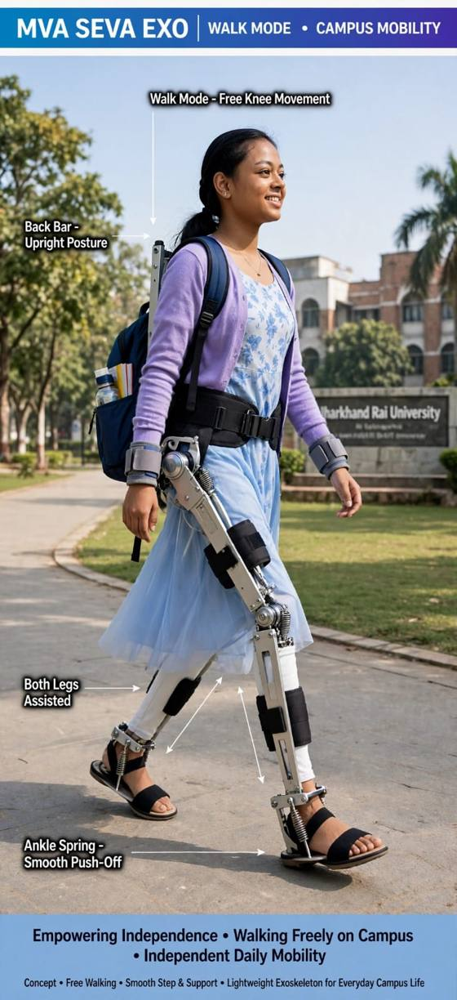
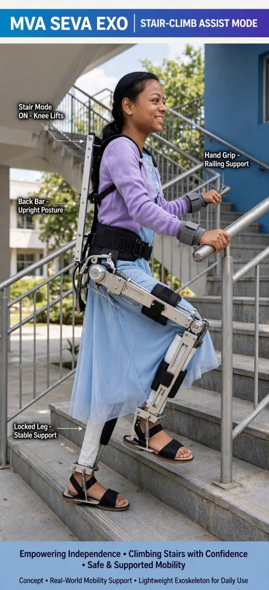
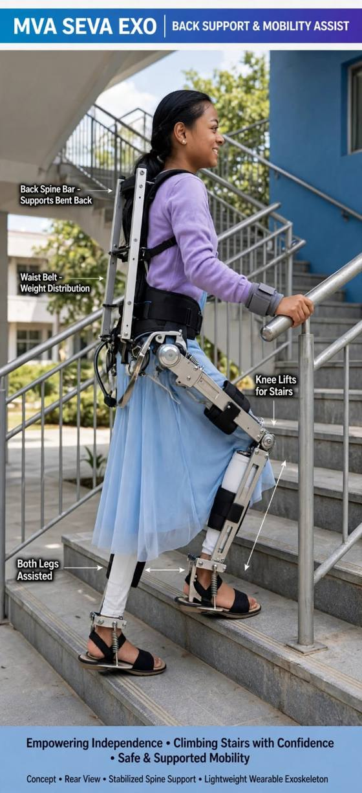
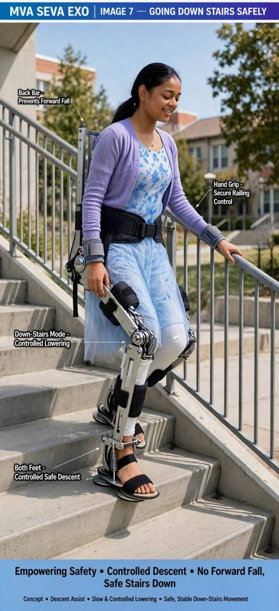
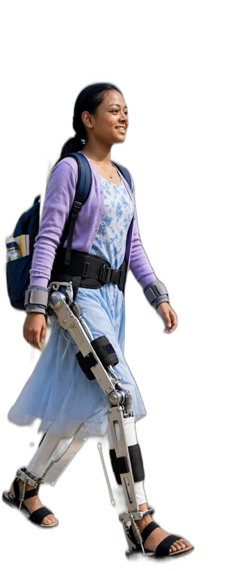

CHALLENGE A
Lower-limb fatigue and instability
Repeated loading around the hips and knees can make everyday transitions—such as standing up or walking—difficult for some users.
MVA Seva Sentinel Exo is a wearable lower-body and back-support exoskeleton concept. This page explains the need it addresses, the proposed solution, how its mechanical, electronic and software layers work together, and what can be developed next.
People with lower-limb weakness, reduced balance or difficulty maintaining posture may need assistance during standing, walking, sitting and stair movement. Conventional mobility aids can help, but they do not always provide wearable joint support while leaving the hands available for everyday tasks.
Repeated loading around the hips and knees can make everyday transitions—such as standing up or walking—difficult for some users.
A support system must distribute loads through the waist and frame rather than concentrating pressure at a single joint or soft-tissue contact point.
Transitions, uneven timing and stair movement call for predictable assistance, controlled motion and a clear way to stop the system.
Advanced powered exoskeletons can be expensive and complex. The project brief targets a simpler, modular and lower-cost design direction.
The concept combines a supportive frame, motion and foot-force sensing, motor assistance at the knee, and operating modes designed around common daily movements.

Back spine bar, adjustable padded waist belt, hip hinges, thigh and calf cuffs, knee joints, ankle spring plates and foot plates.
ESP32 controller, MPU6050 motion sensor, foot-force sensors and geared knee motors are specified in the project design.
Walk, stair ascent, stair descent, sit, stand, rest and anti-fall are represented in the software experience. Demo telemetry is simulated.
The intended control path starts with sensing, moves through decision logic, and ends with bounded actuator commands. Mechanical support and emergency stopping remain important independent safety elements.
Sensor readings are intended to inform the next control decision. A developed prototype should add sensor calibration, plausibility checks, fault detection, current limits and a tested stop state before any wearer trials.
The design includes a mechanical knee lock and emergency cut-off concept. A physical prototype should make emergency release reachable, verify power isolation and remain mechanically supportive if power is lost.
This list reflects the supplied project specification and blueprint. It should be treated as the proposed hardware architecture, not proof that each component is already assembled or validated.






The next phase should prioritize engineering evidence, user safety and measured performance before expanding automation.
Fabricate the frame, document actual components, add sensor calibration and log raw IMU, force, motor-current and battery data.
Test joint range, torque limits, thermal behavior, battery protection, emergency stop, mechanical lock and failure states on a rig—without a wearer.
Work with rehabilitation and biomedical engineering specialists to assess fit, pressure points, human factors, risk controls and appropriate approvals for supervised trials.
Explore adaptive assistance, gait-phase estimation, configurable user profiles and robust fault detection after the basic control system is validated.
Add secure data logging, battery-health monitoring and clinician-facing summaries with privacy and consent designed in from the start.
Reduce weight, improve adjustability and serviceability, standardize parts and verify total cost against a documented bill of materials.
3D model, movement-mode selection, camera views, annotations and a cinematic tour.
HUD values and load/runtime calculations are software demonstrations. They are not live measurements from connected hardware.